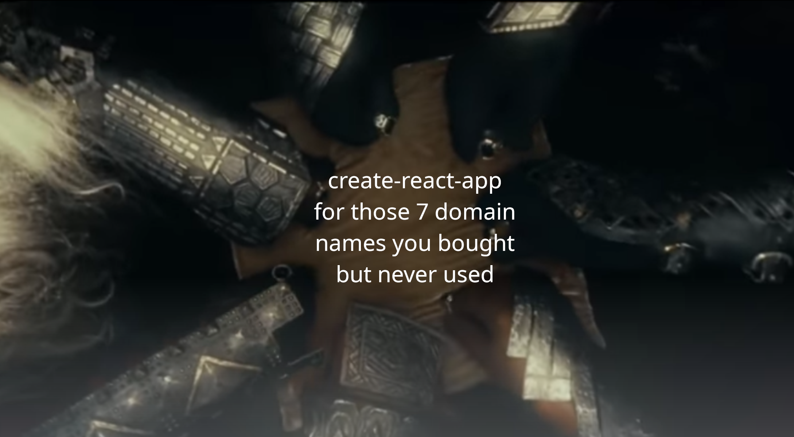
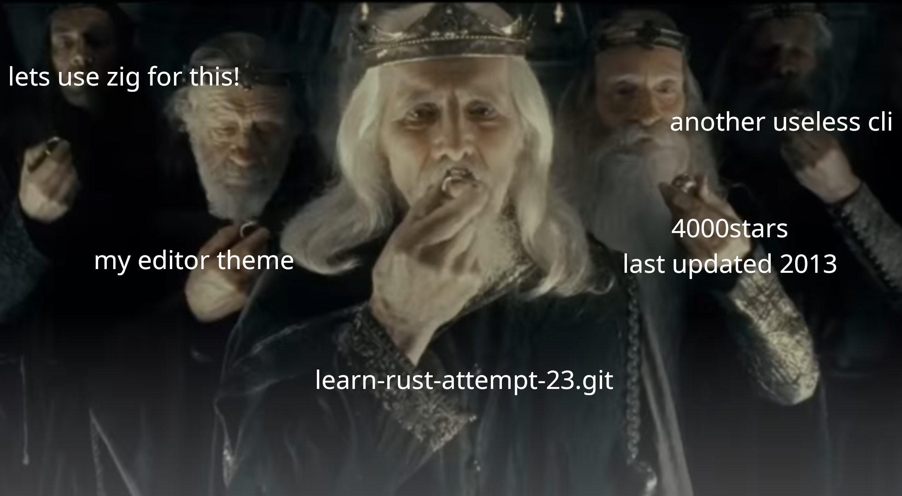
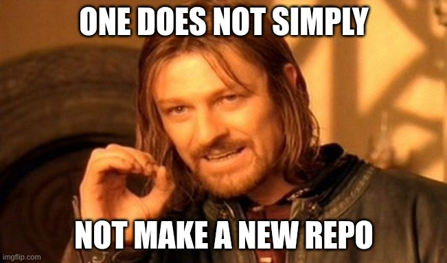
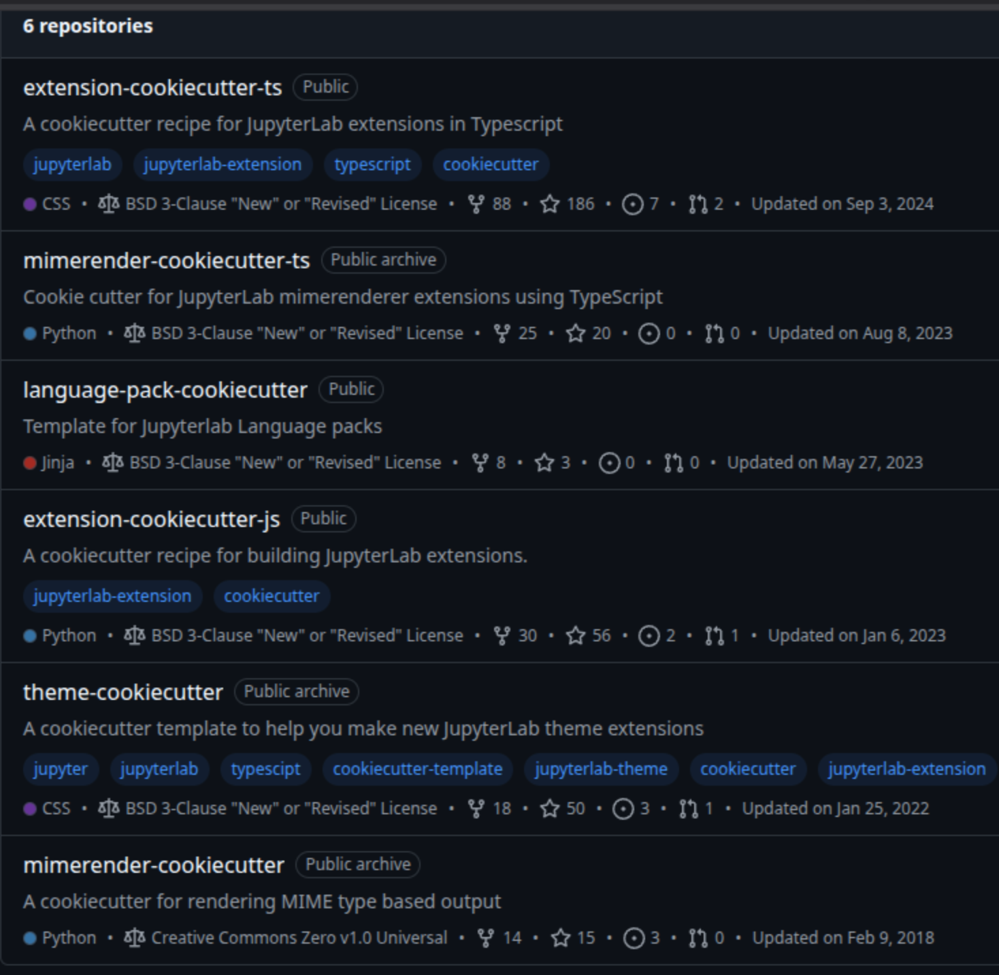

<!doctype html>
<html lang="en">
<head>
  <meta charset="utf-8">
  <title>Copier</title>
  <link rel="stylesheet" href="assets/dist/reveal.css">
  <link rel="stylesheet" href="assets/dist/theme/white.css" id="theme">
  <link rel="stylesheet" href="assets/plugin/highlight/monokai.css">
  <script async src="https://www.googletagmanager.com/gtag/js?id=G-PJBFEVM4RY"></script>
  <script>
    window.dataLayer = window.dataLayer || [];
    function gtag(){dataLayer.push(arguments);}
    gtag('js', new Date());
    gtag('config', 'G-PJBFEVM4RY');
  </script>
  <style>
    .reveal .smallfont {
      font-size: 18px;
    }
  </style>
</head>
<body>
  <div class="reveal">
    <div class="slides">
      <section data-markdown>
        <script type="text/template">
          <!-- .slide: data-background-color="rgb(0,0,0)" -->
          <!-- .slide: data-background-image="assets/img/copier2025/ring.png" -->
          <!-- .slide: data-background-opacity="0.3" -->
          <!-- .slide: style="color: white" -->
          <div style="display: flex; align-items: center; justify-content: space-evenly;">
            <div style="display: flex; flex-direction: column; align-items: center; justify-content: space-evenly;">
              <h1 style="margin-bottom: 5px; font-size: xxxx-large;">One repo to rule them all...</h1>
              <br />
              <h2 style="margin-bottom: 5px; font-size: xx-large;">Control all of your projects with copier</h2>
              <br />
              <br />
              <h2 style="margin-bottom: 5px; font-size: x-large;">Tim Paine / @timkpaine</h2>
            </div>
          </div>
          <div style="display: flex; align-items: center; justify-content: space-evenly;">
            
            
          </div>
          <!-- <br /> -->
          <!-- <div style="box-shadow: inset 0px -20px 10px 20px black; width: 95%; position: absolute; top: 100%; left: 0; right: 0; bottom: 0; height: 260px; max-width: unset; max-height: unset; background-image: url('../assets/img/cubist/pulse.png'); background-size: contain; background-repeat: no-repeat;"> -->
          </div>
        </script>
      </section>
      <section data-markdown>
        <script type="text/template">
          
        </script>
      </section>
      <section>
        <section data-markdown data-separator="---">
          <script type="text/template">
            ## Talk Overview

            Background and Motivation
            <!-- .element: class="fragment" data-fragment-index="1" -->

            Copier
            <!-- .element: class="fragment" data-fragment-index="2" -->

            Example Setup, Real World Use Cases
            <!-- .element: class="fragment" data-fragment-index="3" -->

            What's Next?
            <!-- .element: class="fragment" data-fragment-index="4" -->
          </script>
        </section>
      </section>
      <section>
        <section data-markdown data-separator="---">
          <script type="text/template">
            ## Background and Motivation

            ---

            

            ---

            

            ---

            

            ---

            any of these sound familiar?

            ---

            


            ---

            For me, repos tend to fall into a few categories:

            ---

            # 1

            Projects that should be deprecated
            <!-- .element: class="fragment" data-fragment-index="1" -->

            **NOTE**: this is **NOT** what this talk is about!
            <!-- .element: class="fragment" data-fragment-index="2" -->

            ---

            # 2

            Little websites, utilities, scripts, CLIs, apps,
            or other small projects that serve a single purpose
            but shouldn't be deprecated going to be deprecated
            <!-- .element: class="fragment" data-fragment-index="1" -->

            *hobbies*
            <!-- .element: class="fragment" data-fragment-index="2" -->

            ---
            # 3

            Projects that are "feature-complete" and no longer get active development,
            but still receive bugfixes and minor changes periodically
            <!-- .element: class="fragment" data-fragment-index="1" -->

            *done*
            <!-- .element: class="fragment" data-fragment-index="2" -->

            ---

            # 4

            Projects that were important to me or a former employer, but are not
            important to me at this moment in time
            <!-- .element: class="fragment" data-fragment-index="1" -->

            *backburner*
            <!-- .element: class="fragment" data-fragment-index="2" -->

            ---

            # 5

            Projects that I am actively working on or maintaining
            <!-- .element: class="fragment" data-fragment-index="1" -->

            *active*
            <!-- .element: class="fragment" data-fragment-index="2" -->


            ---

            For organizations, there are a few more:

            ---

            # 6

            Examples, bootstrap, or "getting-started" projects
            <!-- .element: class="fragment" data-fragment-index="1" -->

            *examples*
            <!-- .element: class="fragment" data-fragment-index="2" -->

            ---

            # 7

            Language or framework specific instances or clients
            <!-- .element: class="fragment" data-fragment-index="1" -->

            *variants*
            <!-- .element: class="fragment" data-fragment-index="2" -->

            ---

            In summary

            ---

            hobbies, done, backburner, active, examples, variants

          </script>
        </section>
      </section>
      <section>
        <section data-markdown data-separator="---">
          <script type="text/template">
            ## Requirements

            Fundamentally, we want to be able to produce a template of a project
            <!-- .element: class="fragment" data-fragment-index="1" -->

            We want some things to be standardized across all, and some things
            to be customizable
            <!-- .element: class="fragment" data-fragment-index="2" -->

            ---

            ## Things to Share

            ---

            In addition to the code itself in templates and examples
            <!-- .element: class="fragment" data-fragment-index="1" -->

            we want to share things like...
            <!-- .element: class="fragment" data-fragment-index="2" -->

            ---

            lint/static analysis configuration

            ```toml
[tool.ruff]
line-length = 150

[tool.ruff.lint]
extend-select = ["I"]

[tool.ruff.lint.isort]
combine-as-imports = true
default-section = "third-party"
known-first-party = ["mylibrary"]
section-order = ["future", "standard-library",
  "third-party", "first-party", "local-folder"]

[tool.ruff.lint.per-file-ignores]
"__init__.py" = ["F401", "F403"]

            ```

            ---

            test coverage requirements

            ```toml
[tool.coverage.run]
branch = true
omit = ["mylib/tests/integration/"]

[tool.coverage.report]
exclude_also = [
    "raise NotImplementedError",
    "if __name__ == .__main__.:",
]
ignore_errors = true
fail_under = 50

[tool.pytest.ini_options]
addopts = ["-vvv", "--junitxml=junit.xml"]
            ```

            ---

            ## CICD

            github actions
            <!-- .element: class="fragment" data-fragment-index="1" -->

            issue templates
            <!-- .element: class="fragment" data-fragment-index="2" -->

            PR templates
            <!-- .element: class="fragment" data-fragment-index="3" -->

            codeowners
            <!-- .element: class="fragment" data-fragment-index="4" -->

            ---

            ## Things to Customize

            We also want to be able to customize things when we "clone" the template
            <!-- .element: class="fragment" data-fragment-index="1" -->

            ---

            Name
            <!-- .element: class="fragment" data-fragment-index="1" -->

            License information
            <!-- .element: class="fragment" data-fragment-index="2" -->

            Variant information (e.g. language, framework, topic)
            <!-- .element: class="fragment" data-fragment-index="3" -->

            ---

            

            ---

            Concretely, we want to

            Prompt user for some inputs
            <!-- .element: class="fragment" data-fragment-index="1" -->

            Selectively include files (based on those inputs)
            <!-- .element: class="fragment" data-fragment-index="2" -->

            Change file contents (based on those inputs)
            <!-- .element: class="fragment" data-fragment-index="3" -->

            Update the project and files over time as the template changes
            <!-- .element: class="fragment" data-fragment-index="4" -->

          </script>
        </section>
      </section>
      <section>
        <section data-markdown data-separator="---">
          <script type="text/template">
            ## Options

            ---

            [GitHub Templates](https://docs.github.com/en/repositories/creating-and-managing-repositories/creating-a-template-repository)

            ---

            Very limited

            ---

            [Create React App](https://create-react-app.dev/)
            [Create Next App](https://nextjs.org/docs/pages/api-reference/cli/create-next-app)
            Other bootstrapping tools

            ---

            Too bespoke

            ---

            

            [cookiecutter/cookiecutter](https://github.com/cookiecutter/cookiecutter)

            ---

            Prompt user for inputs
            <!-- .element: class="fragment" data-fragment-index="1" -->

            Selectively include files (based on those inputs)
            <!-- .element: class="fragment" data-fragment-index="2" -->

            Change file contents (based on those inputs)
            <!-- .element: class="fragment" data-fragment-index="3" -->

            ~~Update the project and files over time as the template changes~~
            <!-- .element: class="fragment" data-fragment-index="4" -->

            ---

            Which brings us to...

            ---

            

            [copier-org/copier](https://github.com/copier-org/copiers)

            [docs](https://copier.readthedocs.io/en/stable/)

            ---

            All the functionality of cookiecutter
            <!-- .element: class="fragment" data-fragment-index="1" -->

            Jinja-based templating
            <!-- .element: class="fragment" data-fragment-index="2" -->

            Can sync with the base template when it changes!
            <!-- .element: class="fragment" data-fragment-index="3" -->

            ---


          </script>
        </section>
      </section>
      <section>
        <section data-markdown data-separator="---">
          <script type="text/template">
            ## Q/A

            <span>Tim Paine / <a style="text-decoration: underline;" href="https://github.com/timkpaine">@timkpaine</a></span>

          </script>
        </section>
      </section>
    </div>
  </div>
  <script src="assets/dist/reveal.js"></script>
  <script src="assets/plugin/markdown/markdown.js"></script>
  <script src="assets/plugin/highlight/highlight.js"></script>
  <script src="assets/plugin/notes/notes.js"></script>
  <script src="assets/plugin/math/math.js"></script>
  <script>
    Reveal.initialize({
      center: true,
      controls: true,
      history: true,
      plugins: [ RevealMarkdown, RevealHighlight, RevealNotes, RevealMath ],
      progress: true,
      slideNumber: true
    });
  </script>
</body>
</html>
